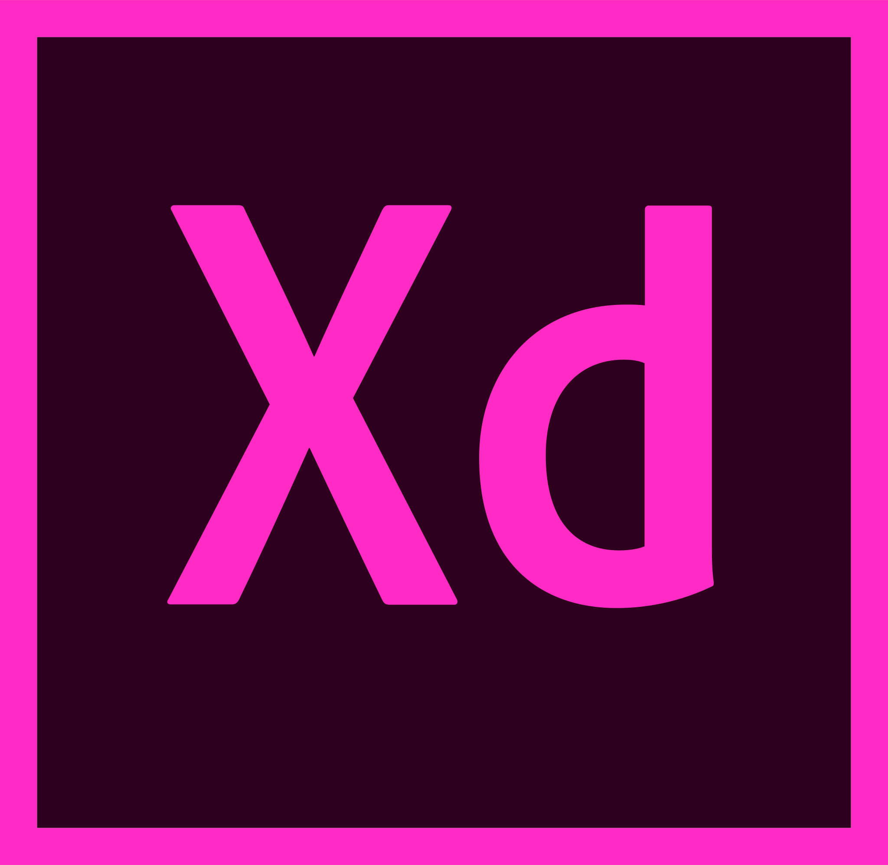

👋Hello!
Let's start off with a little introduction. I'm Douglas, a front-end web developer near Glasgow, Scotland.
I've been working as a web developer full-time since graduating with a Masters in Mobile Web Development, after shifting from a career that mixed web design/development in with several years experience working in studios designing for print and digital media.
There is so much to learn and do with development and as digital technology continues to touch more of our lives I get excited by all the elements out there for me to learn and work with.
Coming from a design background, areas like UX and UI really interest me as it seems like a great way to bridge my two experiences together - development and design. It also gets you to look at things in a different light as well which can be really interesting and helpful.
🖥Development List
Below you can see a curated list of some sites that I have developed or worked on while working with a company or agency. With some of these sites I have also had design input during development to aid in component creation or the responsive behaviour and apperance.
Sites below I have developed using a variety of resources including but not limited to: WordPress, Advanced Custom Fields, Bootstrap, WooCommerce and the Sage Roots starter theme.
Sites below I have edited, updated or re-developed. Involved working alongside other developers in some cases and problem solving to understand a legacy code-base - implementing required changes and making sure new code did not conflict.
📂Employment
Below you can see some details about my most recent employment history and the associated experience gained from the workplace, as well as a basic outline of my role and responsibilities.
Renfrewshire Council
Sole front-end developer for the Digital First team with remit to digitise services for internal and external audiences.
Design, development and editing of council SaaS system used for online services as well as proposing, planning and implementing modern updates. Ensuring accessibility standards are followed.
Jan 2020 - currentEquator
Interface developer - working with a wide variety of clients and project sizes. Working in a busy agile environment with other departments (design, client services, insights).
developing bespoke front-end solutions for Umbraco, WordPress and Drupal as well as updating existing client sites.
May 2018 - Dec 2019fatBuzz
Web developer - Management and creation of hosting packages, databases, domain names, and mailboxes.
As well as providing support, training, and basic SEO/Google Analytics foundations during development of custom WordPress sites.
Aug 2017 - May 2018fatBuzz
Junior web developer - working with a wide variety of clients and project sizes.
Developing custom WordPress sites from the ground up using the Sage starter theme based on in-house custom designs and updating or managing existing client sites.
Feb 2016 - Aug 2017Beyond the most recent positions listed above which focus on my shift to full time web development, I also have over 7 years experience as a graphic designer and print operator working in a number of studios.
Each company has its own unique characteristics which let me apply my existing knowledge in many ways but also work with and around team members where I could learn new skills and improve existing ones.
👨💻Skill Sets
Comfortable on Mac or PC environments, I have many adaptible and cross compatible skills between my past experience as a designer and my current as a developer that I use day-to-day. All of these are augmented with my desire to improve on existing skills but also learn and develop new ones.
I'm fluent with HTML5 and CSS3 - employing many modern work styles including semantic mark-up, Sass, BEM formatting and Git. I continue to build and improve on JavaScript, PHP, MySQL databases, front-end build tools (Gulp, Webpack) and have experience with popular CMS systems such as WordPress, Drupal and some Umbraco.
Day-to-day I also make use of many industry standard software for both production - such as Adobe CC (Illustrator, Photoshop, XD) and productivity/collaboration - such as Microsoft Teams, Atlassian (Jira, Confluence, BitBucket) or Figma.


- 


🎓Active Learning
Web development is such a fast paced and changing industry with so many micro-disciplines within the over arching title. One thing may interest you more than another or your path into the industry might be the deciding factor.
I most deffinetly coming from a more design direction, tending to focus on the visual side of front-end web development, but also aim to improve my skill sets and level up what I do. So I look at the wider landscape and continue to learn and improve my craft.
Below you can see a list of some current resources that I'm using to keep pushing myself and add to or update the tools I have availible in my front-end toolbox.
-
React for Beginenrs
A very popular framework that is highly desirable in the industry and the next step in pushing my JavaScript understanding and practical use.
-
Beginner JavaScript
Continuing to improve my deeper understanding of JavaScript across the board to use it more beyond the day-to-day front-end basics.
Developer Projects
It's very easy to get caught up in a loop of continual reading, research and tutorials so I also try and break out of this loop and build things to demonstrate learned skills or hone existing skills. You can view some of this work here:
Go To Dev Project Site🎨Design
Before going back to university to complete a masters in mobile web development, I worked as a graphic designer for over 7 years in a range of print studios where I designed for both digital and litho.
Design work covered a wide range of products including but not limited to: stationery, promotional leaflets, branding and logo design, wedding stationery, large format banners and posters, booklets, and tickets/vouchers.
In many of my roles I was also responsible for manageing the in-house printing and outsourcing of print runs. Not only did this develop my understanding of a variety of printing standards but it also allowed me to curate relationships with outside companies.
🎮Hobbies
In my spare time I like to work on any side project ideas I have as well as continuine anything I'm currently doing for active learning. When away from the computer though, I'm a Rugby & Motorsport fan and also enjoy climbing, photography, gaming & just being all-round geeky.